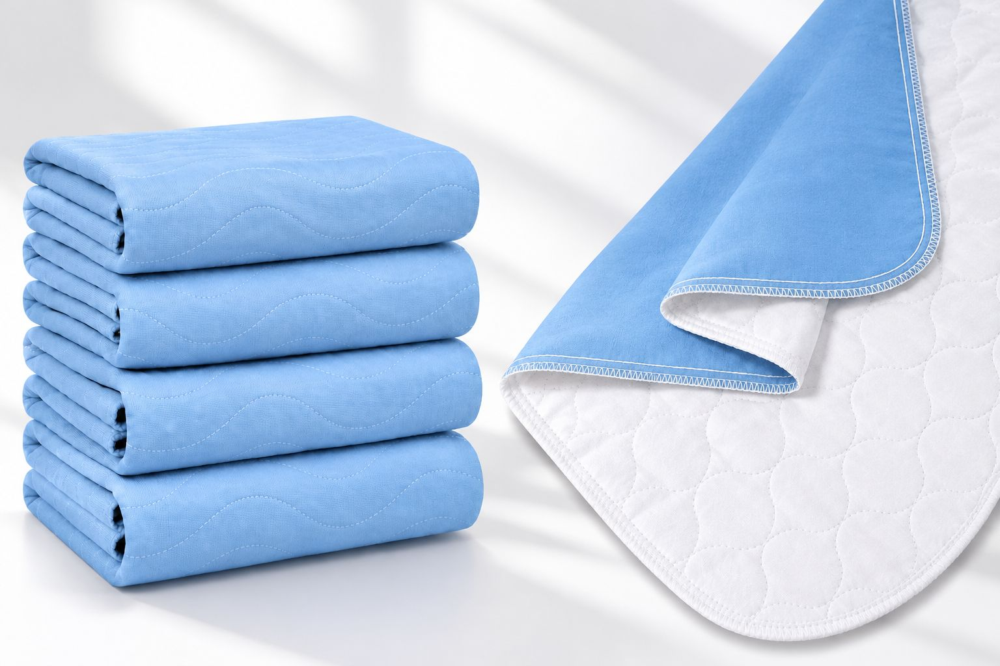

Märkte · Japan
Japan: der reifste Pflegemarkt
Japans alternde Bevölkerung hat eine Kultur von Pflegeprodukten geschaffen, die anderen Ländern Jahre voraus ist. Waschbare wasserdichte Laken konkurrieren über Passform, Geräuscharmut, Qualität und Preis.

2011Erwachsenenwindeln überholten Babywindeln im UmsatzFortune / Bloomberg
$2.9BMarkt für Erwachsenenwindeln in Japan 2025 – ein Indikator für Inkontinenz-AusgabenIMARC
>35%Prognostizierter Anteil der über 65-Jährigen bis 2050ResearchAndMarkets
¥3,000Durchschnittspreis für 介護用 防水シーツ; waschbare Teilauflagen ab ≈ 1.890 ¥Vergleichsportale, 2026
Kaufverhalten
Worauf japanische Käufer achten
- 防水 vs 撥水: echte wasserdichte Unterlagen (mit TPU) liegen in Pflege-Rankings vor nur wasserabweisenden
- Geräuscharmut (音がしない) und Atmungsaktivität (ムレない)
- Genaue Größen in cm, inklusive Halbformat 90×60 und Vollformat 90×170 cm
- Trocknereignung (乾燥機対応) und Oberstoff aus 綿100%
- Japanisches Pflegeetikett und Konformität mit dem 家庭用品品質表示法
- Vergleichsportale (my-best, mynavi) und Rankings beeinflussen Käufe stark

Keywords
Japanische Keywords
| Keyword | Bedeutung | Einsatz |
|---|---|---|
| 洗える防水シーツ | Waschbares wasserdichtes Laken | Kernbegriff |
| 介護用 防水シーツ | Wasserdichtes Laken für die Seniorenpflege | Positionierung Seniorenpflege |
| 介護用 吸水パッド | Saugende Pflegeunterlage | Kategorie prüfen |
| おねしょシーツ | Bettnässer-Laken | Kinder |
| ペット用 防水マット | Wasserdichte Matte für Haustiere | Haustiere |
| 繰り返し使える / 洗濯機で洗える | Wiederverwendbar / maschinenwaschbar | Merkmalsbegriffe |
Kanäle: Amazon.co.jp, Rakuten, Yahoo! Shopping sowie Pflegefachhandel und Pflegehilfsmittel-Verleih (介護用品レンタル). In Japan teilen sich Google (≈60 %) und Bing / Yahoo! die Suche (StatCounter, Okt. 2026) – eine japanische Landingpage bedient beide.
Quellen
- ASINsight – Amazon-US-Bericht „washable underpads“ (Juli 2026)
- The Business Research Company – Marktbericht Mehrweg-Unterlagen
- Persistence Market Research – Markt für Mehrweg-Inkontinenzprodukte
- Fortune Business Insights – Markt für Einwegunterlagen
- Fortune – Japan: Erwachsenen- vs. Babywindeln (2024)
- IMARC – Markt für Erwachsenenwindeln in Japan
- my-best – Ranking 介護用防水シーツ (2026)
- testbedarf.de — Inkontinenzauflage Vergleich 2026
- TRSA – Faktenblatt Mehrweg-Unterlagen
- Amazon.com-Produktseiten (Utopia Bedding, IMPROVIA), abgerufen im Nov. 2026
Marktforschungszahlen unterscheiden sich nach Abgrenzung und Methode. Betrachten Sie sie als Richtwerte und prüfen Sie sie vor Investitionsentscheidungen.
Bereit für Ihre eigene Linie waschbarer Unterlagen?
Nennen Sie uns Markt, Größen und Mengen. Innerhalb eines Werktags erhalten Sie Datenblatt und Staffelpreise.